Sarathi-Serve：驯服 LLM 推理的吞吐-延迟权衡
中文全文翻译
摘要
LLM 请求先执行高延迟、计算密集的 prefill，再逐 token decode。大 batch 有利于 decode 吞吐，却让 prefill 与 decode 交错时难以兼顾吞吐和延迟。Sarathi-Serve 将 prefill 切成近似等长的 chunk，并构造 stall-free schedule，在不暂停现有 decode 的情况下接纳新请求。均匀 batch 还减少流水线并行气泡，在多种模型与硬件上显著提高 SLO 约束下的服务容量。
关键词：LLM serving；chunked prefill；stall-free scheduling；TBT；流水线并行
1 简介
大语言模型（LLM）在自然语言处理、问答、代码生成等多种任务中展现出令人印象深刻的能力。这导致它们在许多应用中的使用率大幅提升，如聊天机器人、搜索、代码助手等。在大型模型上运行推理所需的大量GPU计算，加上其使用率的显著增加，使LLM推理成为当今GPU的主导工作负载。因此，优化LLM推理一直是许多近期系统的关键关注点。
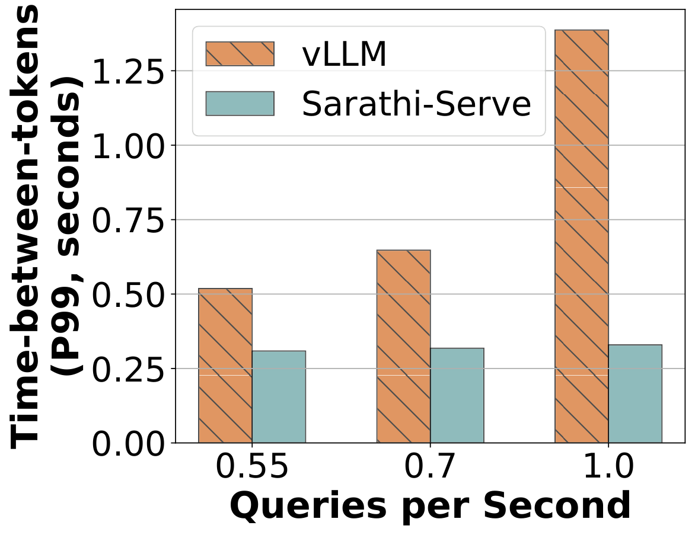
优化吞吐量和延迟都是LLM推理中的重要目标，因为前者有助于保持服务成本的可控性，而后者则是满足应用需求的必要条件。本文展示了当前的LLM服务系统必须在吞吐量与延迟之间权衡。特别是，batch 处理可以显著提高LLM的推理吞吐量。然而，现有系统batch 处理多个请求的方式会导致吞吐量或延迟的妥协。例如，3 表明，在最先进的 LLM 服务系统 vLLM 中，增加负载会显著增加尾延迟。
每个LLM推理请求经历两个阶段—— prefill 阶段，随后是 解码 阶段。 prefill 阶段对应于输入prompt的处理，译 码 阶段对应于自回归token生成。prefill阶段是计算受限的，因为它并行处理输入prompt的所有token，而decode 阶段则是内存受限的，因为它每次只处理一个token。因此，解码从batch中显著受益，因为大批量可以更高效地利用GPU，而prefill则无法从batch中受益。
当前的LLM推理调度器大致可分为两类：1，即 prefill 优先级和 解码优先 级，具体取决于它们在batch请求时如何调度prefill和decode 阶段。本文认为，这两种策略都存在根本性的陷阱，使其不适合在线推理（见4）。
传统的请求级batch系统如FasterTransformer采用 解码优先 级调度。这些系统向执行引擎提交一批请求，执行引擎先计算所有请求的prefill阶段，然后调度decode 阶段。batch只有在所有请求完成decode 阶段后才会完成，即只要有一个或多个请求在执行解码，新的prefill就不会被安排。该策略优化了延迟指标间时间间token（TBT）的推理——这是大语言模型中重要的性能指标。这是因为新请求不会影响正在进行的请求在decode 阶段的执行。然而， 解码优先 调度器严重影响吞吐量，因为即使batch中的部分请求提前完成，执行仍会以减少batch规模继续，直到最后一个请求完成。
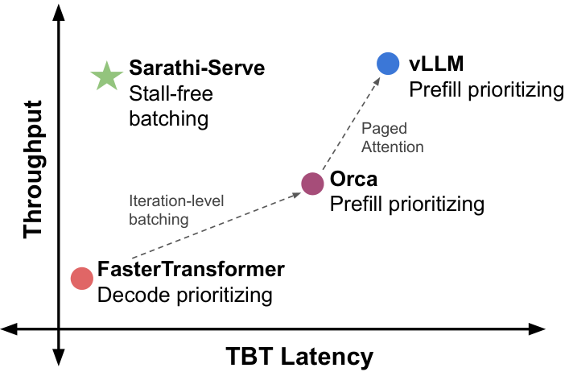
Orca引入了迭代级batch，请求可以动态地在单个迭代的粒度下进入或退出batch。迭代级batch通过避免请求级batch系统的低效性，提高了吞吐量。Orca 以及其他一些新近的系统如 vLLM 结合了迭代级batch与 prefill优先 调度，即在 GPU 内存可用时，积极优先安排一个或多个请求的prefill阶段。这样， 优先处理prefill 的调度器吞吐量更好，因为先计算prefill后，后续解码可以以较高batch运行。然而，优先处理prefill会导致高延迟，因为这会干扰正在进行的解码。由于prefill根据给定prompt的长度可能花费任意较长的时间，优先 排序prefill 的调度器导致了一种不良现象，本文称之为 生成停滞 。例如，1 显示 vLLM 中的生成停滞可能持续数秒。
传统迭代级调度系统如Orca带来的另一个挑战是流水线停滞或气泡。这些配置出现在流水线并行（PP）部署中，用于在多个节点上扩展LLM推理。在如NVIDIA DGX A100等高带宽连接的服务器中，张量并行（TP）可支持在多达8块GPU上部署LLM，支持低延迟的大型batch。然而，当scale-up 域不可用时，TP的延迟可能极高。因此，作为TP的替代方案，流水线并行（PP）通常在普通商用网络中广泛使用。现有系统依赖微batch 处理来缓解管道停滞或气泡。然而，标准的微batch调度仍可能因LLM推断的独特特性而产生流水线气泡。具体来说，LLM推理由不同长度的prefill和解码混合而成。因此，不同的微batch间的运行时长可能差异极大，浪费 GPU 周期并降低整体系统吞吐量。
为应对这些挑战，我们提出了Sarathi-Serve调度器，用于在可扩展的在线LLM推理服务中平衡吞吐量与延迟权衡。Sarathi-Serve基于两个关键理念： 分块prefill 和 无停顿 调度。 分块prefill 将prefill请求拆分为相等的计算大小块，并通过多次迭代计算prompt的prefill阶段（每次迭代包含部分prompttoken）。 无停顿 调度允许 新请求加入正在运行的batch，而无需暂停正在进行的解码。这涉及通过将所有正在进行的解码与新请求中的一个（或多个）prefill块合并，使每个batch达到预配置的块大小来构建一个batch。Sarathi-Serve 基于迭代级batch，但有一个重要区别：它在每次迭代中限制prefilltoken数量，同时在运行batch中接受新请求。这不仅限制了每次迭代的延迟，也使其几乎独立于输入prompt的总长度。通过这种方式，Sarathi-Serve最大限度地减少了计算新prefill对正在进行解码TBT的冲击，从而实现高吞吐量和低TBT延迟。
此外，Sarathi-Serve构建的混合批（由prefill和解码token组成）计算需求几乎一致。通过流水线并行，我们可以创建基于微batch 处理的平衡调度，显著减少流水线气泡并提高GPU利用率，从而实现高效且可扩展的部署。
我们评估了不同型号和硬件上的Sarathi-Serve——Mistral-7B在单一A100上，Yi-34B在2个A100 GPU上带双向张量并行，LLaMA2-70B在8个A40 GPU，以及Falcon-180B在8个A100 GPU上通过普通商用以太网连接的双路流水线和四路张量并行。对于Yi-34B，Sarathi-Serve在不同SLO目标下提升系统服务能力多达3.7\(\times\) 。同样，Mistral-7B的服务能力可提升2.6\(\times\) 。Sarathi-Serve还减少了流水线气泡，使Falcon-180B在采用流水线并行部署时，端到端服务能力提升了多达5.6\(\times\) 。
我们论文的主要贡献包括：
我们发现当前LLM服务系统存在若干陷阱，尤其是在处理吞吐量与延迟权衡的背景下。
我们引入了两种简单但有效的技术： 分块prefill 和 无停滞batch，以提升LLM服务系统的性能。
我们通过对多个模型、硬件和并行策略的广泛评估，展示了Sarathi-Serve能显著提升模型服务能力。
2 背景
本节介绍典型的大语言模型架构及其自回归推理过程。我们还概述了调度策略和重要的绩效指标。
2.1 Transformer架构
流行的大语言模型，如GPT-3、LLaMA、Yi等，都是仅靠解码器的Transformer模型，训练于下一个token预测任务。这些模型由结构相同的层叠组成。每一层包含两个模块——自注意力网络和前馈网络（FFN）。
自注意模块是Transformer架构的核心，使序列的每个部分能够考虑之前所有部分，从而生成上下文表示。在自注意计算过程中，首先通过线性变换获得对应每个输入token的查询（\(Q\)）、键（\(K\)）和值（\(V\)）向量。接下来， 注意 算符计算序列中所有token之间的语义关系。这涉及计算每个 \(Q\) 向量与序列中所有前一个符号的 \(K\) 向量的点积，然后进行软极限运算获得权重向量，再用该向量计算 \(V\) 向量的加权平均。这种注意力计算可以在多个 头上进行，其输出通过线性变换组合。
FFN通常由两个线性变换组成，中间有一个非线性激活。第一线性层将 \(h\) 维的输入符号嵌入转换为更高维 \(h2\)。随后是一个激活函数，通常为ReLU或GELU。最后，第二线性层将token嵌入变回原始维 \(h\)。
2.2 LLM 推理过程
LLM推理包括两个不同的阶段—— prefill 阶段，随后是 解码 阶段。prefill阶段处理用户的输入prompt并产生第一个输出token。随后，decode 阶段逐个生成输出token，前一步生成的token通过模型生成下一个token，直到生成一个特殊的 序列结束 token。注意，decode 阶段需要访问所有先前处理过的token相关的所有键和值，才能执行注意力操作。为避免重复计算，现代大语言模型推理系统将激活存储在KV cache中。
一个典型的LLMprompt包含数百到数千个输入token 相应表格， 。在prefill阶段，所有这些prompttoken都会在单次迭代中并行处理。并行处理允许高效利用 GPU 计算。相反，decode 阶段涉及模型对前一次迭代生成的单个token进行完整转传。这导致计算利用率低，导致解码受内存限制。
生产服务系统必须处理来自多个用户的并发请求。以顺序方式简单处理请求会导致GPU计算严重不足。为了实现更高的GPU利用率，LLM服务系统利用batch同时处理多个请求。这对decode 阶段处理尤其有效，因为在低batch时计算强度较低。更大的batch大小允许在多个请求中摊销取模型参数的成本。
相反，每个请求的prefill阶段包含足够的token数量以饱和 GPU 计算，这使得batch变得无效。 5 展示了吞吐量随batch大小的函数，我们可以观察到，decode iteration吞吐量几乎线性增加，而prefill吞吐量几乎在单个请求下达到饱和。
LLM推断的两个阶段——prefill和解码——表现出截然不同的行为，batch极大提升了解码相吞吐量，但对prefill吞吐量影响甚微。
最近，提出了几种互补技术，通过支持更大批量来优化吞吐量。Kwon 等人提出了 PagedAttention ，允许更多请求同时执行，消除 KV 缓存中的碎片。在LLaMA2、Falcon和Yi等前沿LLM模型中，多查询关注（MQA）、群查询关注（GQA）的应用也显著缓解了LLM推理中的内存瓶颈。例如，LLaMA2-70B型号的KV cache占地比LLaMA-65B小了8\(\times\) 。
初始化当前批 \(B \leftarrow \emptyset\) \(R_{new} \leftarrow\) get_next_request（） \(B \leftarrow B + R_{new}\) \(R_{new} \leftarrow\) get_next_request（） prefill（\(B\)）、解码（\(B\)） \(B \leftarrow\) filter_finished_requests（\(B\)）
初始化当前批 \(B \leftarrow \emptyset\) \(B_{new} \leftarrow \emptyset\) \(R_{new} \leftarrow\) get_next_request（） \(B_{new} \leftarrow B_{new} + R_{new}\) \(R_{new} \leftarrow\) get_next_request（） prefill（\(B_{new}\)） \(B \leftarrow B + B_{new}\) 解码（\(B\)） \(B \leftarrow\) \(B\)）
2.3 多GPU大语言模型推理
随着模型规模不断增长，扩展LLM到多GPU甚至多节点部署变得必要。此外，LLM的推理吞吐量，特别是decode 阶段的吞吐量，受限于GPU上可容纳的最大batch大小。因此，推理效率可以受益于模型并行，通过在多个GPU上分片模型权重，实现更大的batch规模。此前的研究曾同时采用张量并行（TP）和流水线并行（PP）两种方法。
TP通过平均分配模型权重和KV cache到GPU工作单元，将每层分片覆盖所有参与GPU。这样，TP可以线性地按GPUbatch规模扩展。然而，TP 由于每层有两个全约简操作——一个在注意力计算中，另一个在 FFN 中，TP 涉及较高的通信成本。此外，由于这些通信操作位于关键路径，TP仅在GPU通过高带宽互连（如NVLink）连接的单节点内更受青睐。
与TP相比，PP将模型按层拆分，每个GPU负责部分层。为了让“流水线”中的所有GPU保持忙碌，采用 了微batch 。这些微batch在每次迭代中沿流水线从一个阶段移动到下一个阶段。与TP相比，PP的计算-通信比要好得多，因为它只需发送一次激活，覆盖多层计算。此外，PP仅要求通过点对点通信操作进行通信，而TP中成本更高的allreduction。因此，当高带宽互连不可用时， 例如 跨节点部署，PP比TP更高效。
2.4 性能指标
LLM服务主要关注两个延迟指标：TTFT（首次token时间）和TBT（token间隔时间）。对于给定的请求，TTFT测量从请求到达系统那一刻起生成第一个输出token的延迟。该指标反映了模型的初始响应性。而TBT则测量请求连续输出token生成之间的间隔，影响响应的整体感知流动性。当系统负载时，低吞吐量可能导致较大的调度延迟，进而提高TTFT。
此外，我们还使用吞吐量指标“ 容量”，定义为系统在满足特定延迟目标时能承受的最大请求负载（每秒查询数）。更高的容量是因为可以降低供应成本。
2.5 LLM 推理的调度策略
调度器负责准入控制和batch策略。为了便于阐述，我们通过将现有的LLM推理调度器大致分为两类—— prefill 优先级和 解码优先级。
传统的推理引擎如FasterTransformer、Triton Inference Server使用带有请求级batch的 解码优先 级调度，即 选择一批请求并执行，直到batch中 所有 请求完成（[alg：request_level]）。这种方法降低了调度框架的运营复杂性，但代价是资源利用效率低下。batch中不同的请求通常在输入和输出token数量上有较大差异。请求级调度器会用零填充较短的请求，以匹配batch中最长的请求，这导致计算浪费和待处理请求等待时间更长。
为避免请求级batch的计算浪费，Orca引入了细粒度迭代级batch机制，允许请求在每次模型迭代后动态进出batch。（[算法：iteration_level]）。该方法可显著提升系统吞吐量，目前已被许多大语言模型推理服务系统采用， 如 vLLM、TensorRT-LLM和LightLLM。
当前的迭代级batch系统如vLLM和Orca使用 prefill优先 级调度，在第一时间（例如GPU内存可用时）积极接受新请求。优先排序prefill可以提高吞吐量，因为它增加了后续decode iteration的batch大小。
3 动机
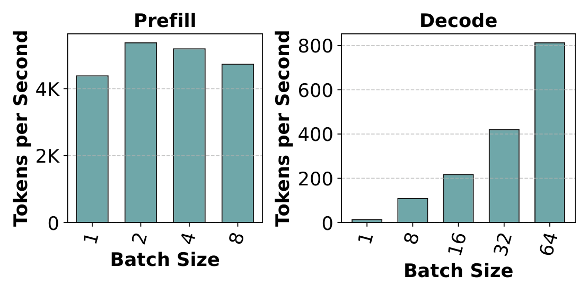
本节首先分析prefill和解码操作的成本。随后，我们重点介绍了服务LLM中出现的吞吐量-延迟权衡和流水线气泡。
3.1 prefill和解码的成本分析
如2.2所述， prefill 阶段并行处理所有输入token，有效地饱和GPU计算，而 解码 阶段一次只处理单个token，效率非常低。 5 展示了吞吐量随batch大小的函数，我们可以观察到，decode iteration中吞吐量随batch大小线性增长，而prefill吞吐量几乎饱和，即使只有一次请求。
LLM推断的两个阶段——prefill和解码——表现出截然不同的行为，batch极大提升了解码相吞吐量，但对prefill吞吐量影响甚微。

为说明这一点，我们在 [图：analysis_per_token] 中计算不同输入大小的每个tokenprefill和解码时间。我们通过调整prompt长度（prefill时使用batch size为1）或处理batch大小（用于解码）来改变模型的输入大小。我们可以从这个实验中得出以下结论。
一个序列长度适中的单一prefill请求可以有效地使GPU计算饱和。如analysis_per_token图所示，prefill吞吐量在低序列长度时几乎呈线性增长，且在512个令符时迅速饱和。因此，即使是较小的序列长度，也能在prefill阶段提供足够的并行性，从而有效利用GPU计算。这促使Sarathi-Serve使用 分块prefill 。
注意，对于非常长的序列， 例如 16K，每个token的prefill时间略有增加。这是由于注意力算符的代价随序列长度成平方增长。
饱和点取决于模型的隐藏规模和部署配置。例如，嵌入规模较大的模型在较小的序列长度下会使prefill吞吐量趋于饱和，而部署到高张量并行度的模型则需要更多符号来饱和，因为每个GPU的计算量减少了。
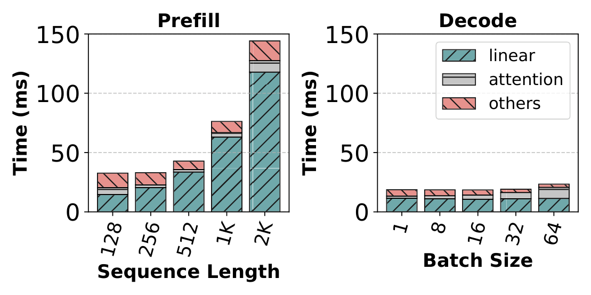
每个token的解码时间比prefill高出数量级，尤其是在小批量时。如analysis_per_token图所示，在极高的解码batch128时，每个token的解码时间仍 \(4.4\times\) 高于每个token最低prefill时间。注意，每个token的解码时间几乎随着batch大小线性增加而缩短。在16时，即解码batch大小的较低端，每个token解码时间仍然是20倍。因此，优化解码对于高效推理LLM至关重要。
7 将prefill和解码计算时间拆分为线性、注意力和其他，并展示了它们各自的贡献。从图中可以看出，线性算符占运行成本的大部分。虽然注意力成本随序列长度成平方增长，但线性算符即使在较长序列中仍占总时间的80%以上。因此，优化线性算子对于提升LLM推断非常重要。
decode 阶段的计算利用率低会浪费GPU的处理能力。为了进一步理解这一点，我们分析了prefill和decode iteration的算术强度。由于LLM推断的大部分时间都花在线性算子上，我们将分析重点放在它们上。
矩阵乘法核与计算数学运算的内存访问重叠。操作的总执行时间可以近似为 \(T = \text{max}(T_{\text{math}}, T_{\text{mem}})\)，其中 \(T_{\text{math}}\) 和 \(T_{\text{mem}}\) 分别代表数学和内存取指操作所花费的时间。如果 \(T_{\text{math}} < T_{\text{mem}}\)，则该操作被视为内存受限。内存受限操作的模型FLOP利用率（MFU）较低。另一方面，受限于计算的操作模型带宽利用率（MBU）较低。 \(T_{\text{math}} = T_{\text{mem}}\)时，计算和内存带宽利用率都被最大化。算术强度量化了从内存中获取的每字节数据执行的数学运算次数。在最佳点，算术操作强度与设备的FLOPS与带宽比值相匹配。 8 显示了 LLaMA2-70B 中线性层在四块 A100 GPU 上运行的线性层的算术强度函数。prefillbatch将从 HBM 内存取线性算符权重到 GPU 缓存的成本摊销到大量token，从而实现高算术强度。相比之下，解码batch的计算强度非常低。 9 表示 LLaMA2-70B 在迭代中线性算子的总执行时间，作为令号数的函数。注意，执行时间在开始阶段仅略有增加， 即 batch处于内存受限状态时，但之后的线性增长， 即 batch成为计算受限状态时。2
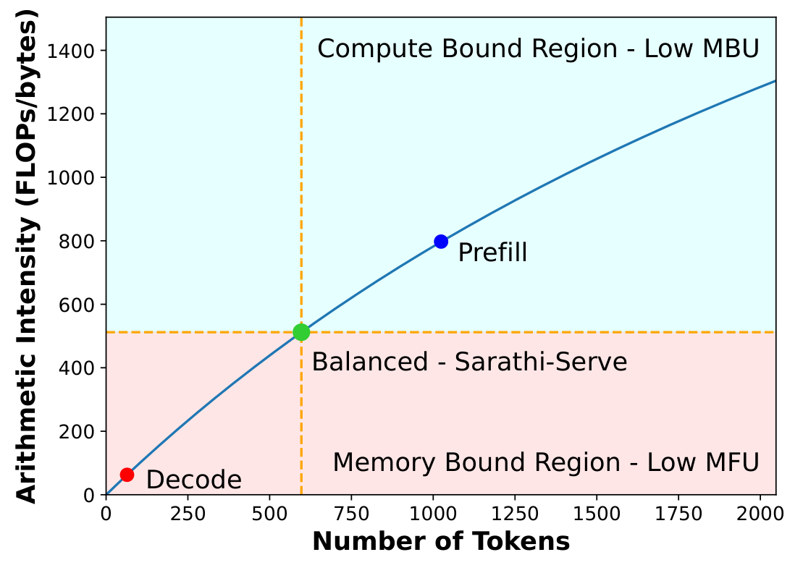
解码batch处于内存受限状态，导致计算资源被低估。这意味着可以同时处理更多token，同时处理解码batch而不显著增加延迟。
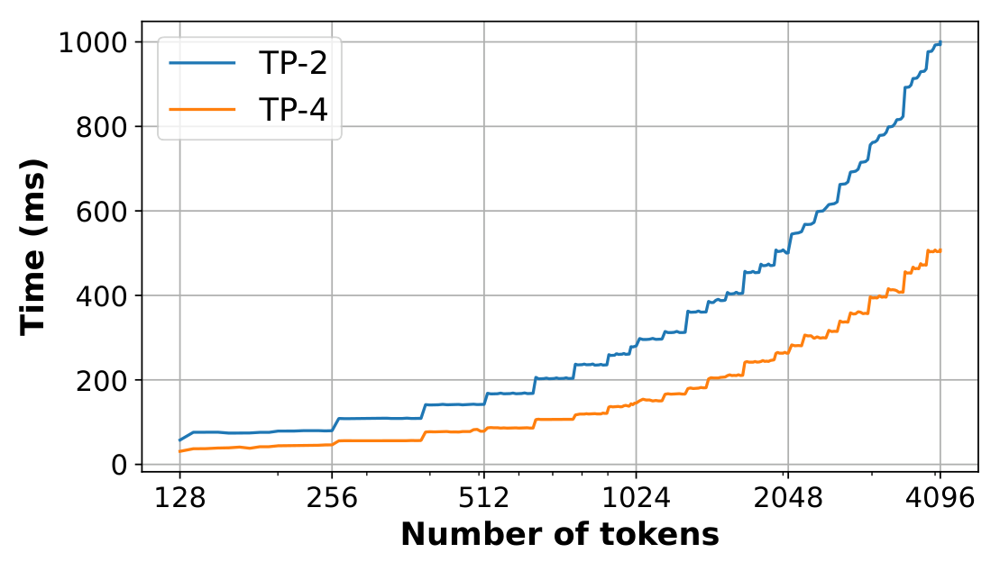
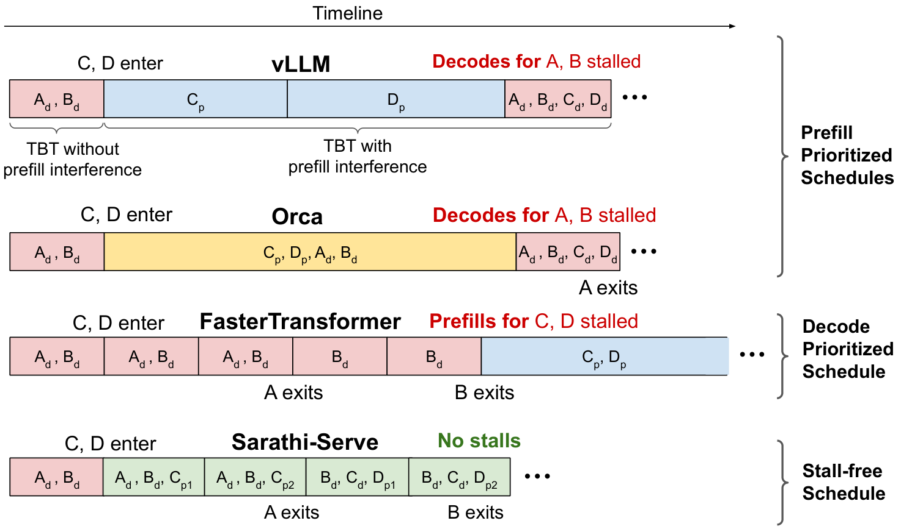
3.2 吞吐量与延迟权衡
迭代级batch提升了系统吞吐量，但我们证明了这会带来高TBT延迟，因为我们称之为 代代停滞的现象。
10 比较了不同的调度策略。示例展示了请求A、B、C和D的时间线（从左到右）。请求A和B在区间开始时处于decode 阶段，经过一次迭代后，请求C和D进入系统。Orca 和 vLLM 都使用 FCFS 迭代级batch，并且积极接受prefill请求，但在batch组合策略上有所不同。Orca 支持由prefill和解码请求组成的混合batch，而 vLLM 仅支持包含全部prefill或全部解码请求的batch。无论有何差异，Orca 和 vLLM 都能通过在后续decode iteration中最大化batch大小来提升吞吐量。然而，急于调度请求C和D的prefill会延迟已运行请求A和B的解码，因为计算一个或多个prefill的迭代可能需要几秒钟，具体取决于输入prompt的长度。因此， prefill优先调 度器可能会在持续解码时引入 代际停滞 ，导致高TBT导致延迟尖峰。
与迭代级batch不同，请求级batch系统如FasterTransformer不会在 所有 已运行的请求完成decode 阶段（[ 算法：request_level]第3行）后调度新请求。在 10中，请求C和D的prefill会暂停，直到请求A和B都退出系统。因此， 解码优先系统 虽然以较低的系统吞吐量为代价，但提供了低TBT延迟。例如，权等人。 证明使用PagedAttention进行迭代级batch时，吞吐量可比FasterTransformer高出数量级。
减少迭代级batch系统延迟尖峰的一种方法是按照Orca推荐使用更小的batch规模。然而，减少batch大小会不利于吞吐量，如2.2所示。因此，现有系统被迫根据所需的SLO在吞吐量和延迟之间进行权衡。
prefill和解码的交错涉及当前LLM推理调度器在吞吐量和延迟之间的权衡。如今的先进系统采用prefill优先级的调度，以牺牲TBT延迟换取高吞吐量。
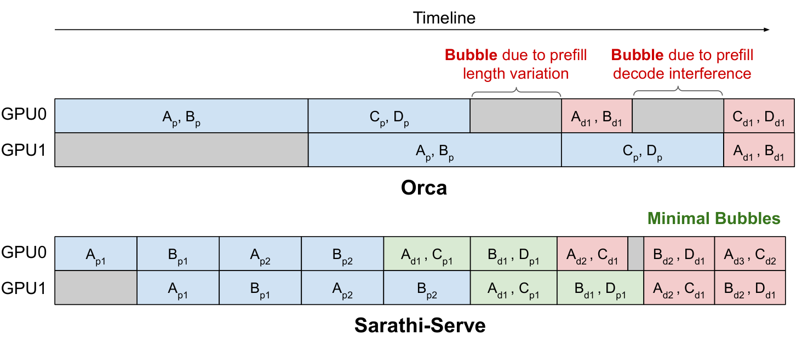
3.3 流水线气泡浪费GPU周期
流水线并行（PP）是大型模型跨节点部署的一种流行策略，因其通信开销低于张量并行（TP）。然而，PP的一个挑战是引入 流水线气泡 或GPU不活跃期，因为后续流水线阶段必须等待前一阶段相应的微batch完成。流水线气泡是培训工作中已知的问题，因为前进和后向通道之间出现，因为前一阶段需要等待后向通道到来。微batch 处理是PP培训工作中常用的一种技术，用于缓解流水线气泡。
推理作业只需前向计算，因此人们可能会期望微batch 处理能够消除推理过程中的流水线气泡。事实上，之前关于Transformer推断的研究，如FasterTransformer和FastServe使用微batch，但未提及流水线气泡。最近提出的Orca还提出迭代级调度消除了管道调度中的泡沫（见图8）。然而，我们的实验表明，即使采用迭代级调度，流水线气泡仍可能在PP中浪费大量GPU周期（5.3）。
LLM推理中的每个微批（或迭代）可能需要不同的计算量（因此执行时间也不同），这取决于微batch中prefill和解码token的组成（见11）。在推理过程中，我们识别出三种类型的气泡：（1）由于连续两个微batch中prefilltoken数量不同而产生的类似\(PB_1\)气泡;（2）由于prefill和decode 阶段计算时间不同而产生的气泡;（3）类似\(PB_2\)的气泡\(PB_3\)由于微batch间解码计算时间的差异，注意力成本取决于累计上下文长度（KV cache的大小），且不同请求之间存在差异。对于 Falcon-180B，单个 4k token的prompt执行时间为 \(\approx1150\) 毫秒，而batch大小为 32 的纯decode iteration则需约 \(\approx200\) 毫秒。这些迭代的交织可能导致一个\(\approx950\)毫秒的气泡。这些流水线气泡是浪费的GPU周期，直接对应于服务吞吐量的损失和延迟增加。随着prompt长度和batch数量的增加，prefill迭代时间更长且更频繁，这个问题会加剧。如果我们能确保每个微batch执行均匀计算，就能减轻这些流水线气泡。
LLM迭代的计算时间可能存在较大差异，取决于批中prefill和解码token的组合。在使用流水线并行时，这可能导致显著的气泡。
4 Sarathi-Serve：设计与实施
我们现在讨论Sarathi-Serve的设计与实现——该系统通过两项关键技术——分 块prefill 和 无停顿batch——提供高吞吐量和可预测的尾延迟。

4.1 分块prefill
正如 我们在3.1中展示的，解码batch对内存的依赖较大，算术强度较低。这种算术强度的松弛为解码batch提供了额外的计算机会。简单来说，这可以通过创建混合batch来实现，将内存受限解码与计算受限prefill结合起来。然而，在许多实际场景中，输入prompt平均包含数千个token， 例如，相应表格 显示 openchat_sharegpt4 和 arxiv_summarization 数据集中的prompt中位数大小分别为 1730 和 7059。将这些长prefill与decode iteration结合，会导致高TBT延迟。
为了应对这一挑战，我们提出了一种称为 分块prefill的 技术，允许在多次迭代中计算大型prefill，分成小块。 分块prefill 是一种基于两个关键洞见的prefill拆分机制。首先，如3.1所述，序列长度适中的prefill请求可以有效地使GPU计算饱和。例如，在7中，prefill吞吐量开始在序列长度约512个时达到饱和。其次，在许多实际场景中，输入prompt平均包含数千个token（相应表格）。这为将大型prefill请求拆分成更小的计算单元提供了机会，这些请求仍然足够大以饱和 GPU 计算。在Sarathi-Serve中，我们利用这一机制形成具有适当数量token的batch，从而在不违反TBT SLO的情况下利用解码batch的计算潜力。
输入：\(T_{max}\)，应用 TBT SLO。初始化token_budget，\(\tau\) \(\leftarrow\) compute_token_buget（\(T_{max}\)） 初始化 batch_num_tokens，\(n_t\) \(\leftarrow\) 0 初始化当前批\(B \leftarrow \emptyset\)
\(n_t \leftarrow n_t + 1\)
\(c \leftarrow\) get_next_chunk_size（\(R\)、 \(\tau\)、 \(n_t\)） \(n_t \leftarrow n_t + c\)
\(R_{new} \leftarrow\) get_next_request（）
\(c \leftarrow\) get_next_chunk_size（\(R_{new}\)、 \(\tau\)、 \(n_t\)）
\(n_t \leftarrow n_t + c\) \(B \leftarrow R_{new}\) 休息
process_hybrid_batch（\(B\)） \(B \leftarrow\) filter_finished_requests（\(B\)） \(n_t \leftarrow 0\)
4.2 无停滞batch
Sarathi-Serve 调度器是一款迭代级调度器，利用 分块prefill 以及prefill和解码的合并，以提升吞吐量同时最小化延迟。
与 Orca 和 vLLM 会延迟现有解码以执行prefill不同，Sarathi-Serve 利用decode iteration中的算术强度余裕，在不延迟系统中解码请求的执行的情况下执行prefill。我们称这种方法为 无停滞batch（[alg：stall_free]）。Sarathi-Serve首先根据用户指定的SLO计算批量可执行的最大token数量预算。我们在 4.3中详细描述了确定该token预算时的考虑因素。在每次调度迭代中，我们首先将所有正在运行的解码打包到下一批batch（[ alg：stall_free]中的第6-8行）。之后，我们会包含任何未完成的prefill（第9-12行）。只有在所有正在运行的请求都被满足后，我们才会接受新的请求（第13-20行）。在向batch添加prefill请求时，我们计算该batch剩余token预算（第11、15行）中可容纳的最大块大小。通过限制每次迭代的计算负载， 无停顿batch 确保解码不会因prefill块共运行而出现代暂停。我们比较了 14中带分块prefill和没有分块prefill的混合batch延迟。朴素的混合batch相比仅解码batch，TBT延迟可大幅增加多达28.3\(\times\) 。相比之下，Sarathi-Serve通过分块提供了更严格的延迟限制。
10 展示了Sarathi-Serve的调度策略，适用于3.2中使用的同一例子。第一次迭代仅为解码，因为无需计算prefill。然而，在系统中新增请求 C 后，Sarathi-Serve 首先将 C 的prefill拆分为两个块，并在后续迭代中调度。同时，通过 无停滞batch，它将分块的prefill与持续解码的A和B合并。这样，Sarathi-Serve既不像现有系统那样解码也不prefill，使Sarathi-Serve在TBT中基本避免延迟尖峰，同时不影响吞吐量。此外， 无停滞batch 结合分 块prefill 还确保了大多数情况下计算混合batch的统一性，有助于减少流水线并行时的气泡，从而实现高效且可扩展的部署。
4.3 确定token预算
token预算基于两个相互竞争的因素确定——TBT SLO要求和 分块prefill 开销。从TBT最小化的角度来看，较小的token预算更为可取，因为prefilltoken较少的迭代延迟更低。然而，较小的token预算可能导致prefill的过度分块化，导致1）GPU利用率降低和2）注意力操作中重复访问KV cache，从而产生开销，这些问题我们下文将讨论。
在计算分块prefill时，每个prompt块的注意力操作都需要访问同一prompt之前所有块的KV cache。这导致GPU HBM的内存读取量增加，尽管计算成本未变。例如，如果prefill序列被拆分为\(N\)块，那么第一个块的KV cache会加载\(N-1\)次，第二个块的KV cache会加载\(N-2\)次，依此类推。然而，我们发现即使在小块大小下，注意prefill操作也是计算受限的操作。实际上，由于内核启动等固定开销，分块可能带来较小的开销。我们详细研究了5.4版本中分块prefill的开销。
因此，在确定token预算时，需要考虑prefill开销与解码延迟之间的权衡。这可以通过一次性对不同数量的batch进行分析，并将token预算设置为最大数量，以便在不违反TBT SLO的情况下批量打包。
另一个影响token预算选择的因素是 tile 量化 效应。GPU通过将给定矩阵划分为瓦片，并将其分配给不同的线程块以实现并行计算来计算matmuls。这里，每个线程块指一组GPU线程，计算相同数量的算术运算。因此，当矩阵尺寸被瓦片尺寸整除时，matmuls 能实现最大的 GPU 利用率。否则，由于瓦 片量化，一些线程块会执行多余的计算。我们观察到，瓦片量化可以显著增加prefill计算时间 ，例如 在某些情况下，使用块大小为257的prefill时间可以比块大小256的增加32%。
最后，在使用流水线并行性时，还应考虑token预算对流水线气泡的影响。更大的块会导致批间运行时间变异增加，形成流水线气泡，从而降低整体系统吞吐量。另一方面，选择非常小的token预算可能导致更高的开销，因为算术强度较低和其他固定开销。
因此，选择合适的token预算是一个复杂的决策，取决于所需的 TBT SLO、并行配置以及具体硬件属性。我们利用 Vidur，一款大语言模型推理分析器和模拟器，确定在特定部署场景下最大化系统容量的token预算。
4.4 实现
我们在开源的vLLM实现基础上实现了Sarathi-Serve。我们通过 FlashAttention v2 和 FlashInfer 内核增加了分页块prefill的支持。本文所有评估均采用FlashAttention后端，因其支持更广泛的模型集。我们还扩展了基础的 vLLM 代码库，以支持各种调度策略、分块prefill、流水线并行和广泛的遥测系统。我们同时使用NCCL进行流水线和张量并行通信。该项目的源代码可在 https://github.com/microsoft/sarathi-serve 获取。
5 实验评估
我们评估了Sarathi-Serve在多种流行模型和GPU配置上的应用（参见相应表格）以及两个数据集（参见相应表格）。我们认为vLLM和Orca是基准，因为它们代表了LLM推断的尖端技术。我们的评估旨在回答以下问题：
在不同的推理服务系统（§5.1）下，模型副本在特定的服务级别目标（SLO）约束下可承受的最大负载是多少？该负载在不同的SLO约束（§5.2）下有何变化？
Sarathi-Serve在TP和PP等多种部署下表现如何？（第5.3节）
分块prefill的开销是多少？（§5.4.1）
单独使用块 prefill 和 无停滞batch 相比，它们分别有何影响？（第5.4.2节）
我们评估了Sarathi-Serve在四个不同型号中的Mistral-7B、Yi-34B、LLaMA2-70B和Falcon-180B——这些型号在其型号尺寸类别中属于顶尖型号。我们使用两种不同的服务器配置。除了LLaMA2-70B外，所有型号我们都使用Azure NC96ads v4虚拟机，每台都配备4块NVIDIA 80GB A100显卡，通过两对NVLINK连接。这些机器通过100 Gbps以太网连接。对于LLaMA2-70B，我们使用的服务器配备了八块成对连接的NVIDIA 48GB A40显卡。我们以二路张量并行配置运行Yi-34B（TP-2），同时以混合并行配置运行LLaMA2-70B和Falcon-180B，配备四个张量并行工作器和两个流水线阶段（TP4-PP2）。
为了模拟现实世界的服务场景，我们利用 openchat_sharegpt4 和 arxiv_summarization 数据集（相应表格）中的请求长度特征生成跟踪。 openchat_sharegpt4 追踪包含了与ChatGPT-4的用户共享对话。一个对话可能包含用户与聊天机器人之间的多轮交互。每轮交互作为独立请求对系统执行。这种多轮特性导致prompt长度的相对变异性较大。相比之下， arxiv_summarization 是科学出版物及其摘要（摘要）的合集 arXiv.org。该数据集包含更长的prompt和输出token数量的变异性较低，代表了如 Microsoft M365 Copilot 和 Google Duet AI 等大语言模型工作负载。请求到达时间是通过泊松分布生成的。我们通过分别删除总长度超过8192和16384个token的请求来过滤这些数据集的异常值。
我们关注TTFT的中位数，因为该指标每个用户请求仅获得一次，而TBT值则位于第99百分位（P99），因为每个解码token都会产生TBT延迟值。

5.1 容量评估
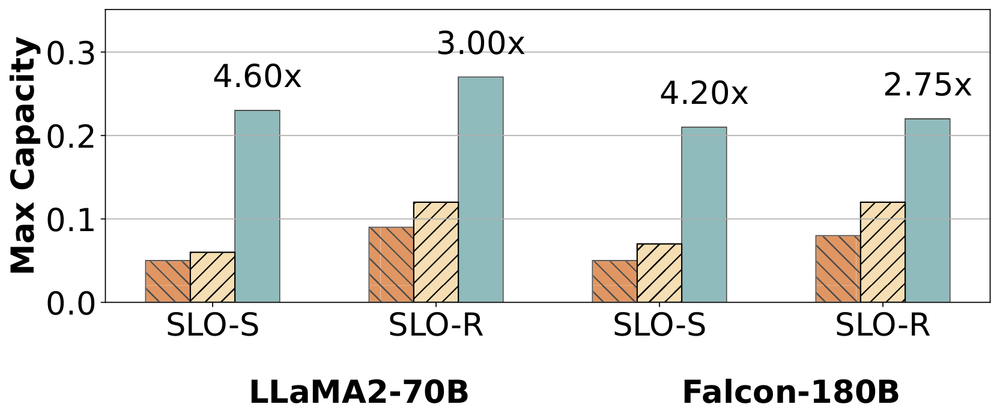
我们在两种不同的延迟配置下，分别在四个模型和两个数据集上评估了Sarathi-Serve、Orca和vLLM。 类似于Patel等人，为了考虑模型与硬件对的固有性能限制，我们定义P99 TBT上的SLO为5\(\times\)和25\(\times\)请求（prefill长度为4k，batch32）的decode iteration执行时间，且在严格和宽松设置下无prefill干扰的情况下运行。 分别。 [表：评估：SLOS]显示了绝对SLO阈值的总结。注意，严格的SLO代表了聊天机器人等交互应用所需的延迟目标。另一方面，宽松配置是应在可预测时间内生成完整输出token序列的系统典范，但对单个token的TBT约束并不严格。对于所有负载实验，我们确保最大负载是可持续的，即排队延迟不会爆炸（我们对中位调度延迟使用限制为2秒）。
17号和20号展示了我们容量实验的结果。Sarathi-Serve在所有模型和工作负载中始终优于Orca和vLLM。在严格SLO下，萨拉西-Serve可承受比Orca高\(4.0\times\)载荷，\(3.7\times\)高于严格SLO（Yi-34B，openchat_sharegpt4）下的vLLM负载。 对于使用流水线并行的大型模型，Sarathi-Serve相比Orca和vLLM（LLaMA2-70B，openchat_sharegpt4）分别获得6.3\(\times\)和4.3\(\times\)的提升，因为流水线气泡较少。
我们观察到，在大多数情况下，Orca和vLLM在达到最大可用吞吐量之前会违反P99 TBT延迟SLO。因此，我们观察到放宽延迟目标可显著提升模型的服务能力。在 Sarathi-Serve 中，可以根据所需的 SLO 调整块大小。因此，我们在 严格 延迟SLO下使用严格的token预算，并将prompt分成更小的部分。这会略微降低系统效率，但能实现更低的尾延迟。另一方面，当延迟约束放松时，我们会增加token预算，以实现更高效的prefill。在 宽松 和 严格 设置下，我们分别使用2048和512的token预算，除了LLaMA2-70B宽松 配置，该配置使用1536的token预算以减少管道泡沫的影响。通过根据工作负载特性动态调整token预算，系统性能还能进一步提升。我们将这次探索留待未来的研究。
我们进一步注意到，vLLM在放松环境下显著优于Orca。原因有两个。首先，Orca 会同时batch多个请求的prompt（最大序列长度 × batch大小 相对于 vLLM 的最大 序列长度 ），这在某些情况下可能导致尾延迟进一步增加。其次，vLLM 支持的batch规模远大于 Orca。Orca 中batch规模较小的原因在于缺少 PagedAttention，以及处理过多tokenbatch时激活内存占用较大。
最后，请注意每个系统的容量相比 openchat_sharegpt4 数据集 arxiv_summarization 更高。这是因为 arxiv_summarization 数据集中的prompt更长——如相应表格所示，7059个中位数token对比1730个。更大的prompt使Orca和vLLM更容易受到延迟违规的影响，因为这些较长的prefill处理时间更长。
5.2 吞吐量与延迟权衡
为了全面理解LLM服务系统中吞吐量与延迟的权衡，我们调整了P99 TBT延迟SLO，并观察vLLM和Sarathi-Serve对系统容量的影响。 21 展示了Mistral-7B和Yi-34B模型在 openchat_sharegpt4 数据集中五个不同SLO值下的结果。
我们用三种不同batch大小评估vLLM，试图按照Yu等人规定的延迟-吞吐量权衡。vLLM的最大容量因TBT最低发射系统（TBT）SLO下的发电停滞而被限制。值得注意的是，vLLM在三种batch大小设置下容量基本相同。这意味着，尽管PagedAttention支持大batch 处理和高效的内存管理——但在实际延迟限制下，vLLM无法利用大batch 处理，因为其 prefill 优先调度器带来了巨大的延迟与吞吐量权衡。
另一方面，Sarathi-Serve中可以通过调整token预算精确控制延迟-吞吐量权衡。Sarathi-Serve在严格SLO（100毫秒，Mistral-7B）下，使用512个小token预算，比vLLM高出3.5\(\times\) 的容量。对于SLO约束较宽松的场景，选择更大的token预算2048使Sarathi-Serve更高效运行，相较vLLM（1s，Yi-34B）容量高出1.65\(\times\) 。
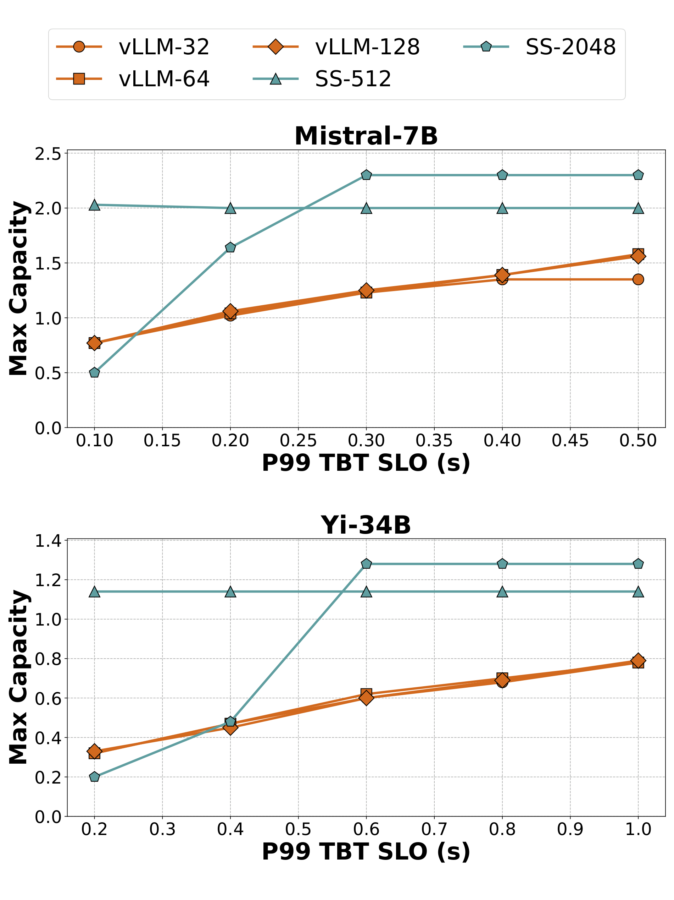
5.3 让流水线并行可行
我们现在证明，Sarathi-Serve使得跨普通商用网络高效地通过流水线并行服务LLM推断成为可能。在这些实验中，我们通过两个节点运行Falcon-180B，每个节点配备四块A100 GPU，通过100 Gbps以太网连接。我们评估模型容量的三种配置：带8路TP的vLLM、流水线并行实现的vLLM，以及带流水线并行的Sarathi-Serve。对于 PP 配置，我们在节点内采用 4 路 TP，节点间则采用双路 PP。
22 显示了纯张量并行 TP-8 部署下 Falcon-180B 仅解码batch与 TP-4 PP-2 混合并行配置的延迟。我们观察到张量并行的中位延迟 \(\sim 2\)\(\times\) 高于流水线并行。这是因为TP由于跨节点全约简，通信开销较高。
23 显示了 Falcon-180B 在openchat_sharegpt4数据集上张量和混合并行配置的容量。注意，与混合并行配置不同，TP即使在放松的SLO下，由于高延迟，也能实现低容量。尽管vLLM在松弛SLO下能支持相当高的混合并行负载，但在严格模式下由于流水线气泡，性能会急剧下降。而Sarathi-Serve则利用分块prefill来减少微batch间执行时间的差异，以避免流水线气泡，在放松的SLO下产能增加1.48\(\times\)，在严格SLO下增加3.6\(\times\)。
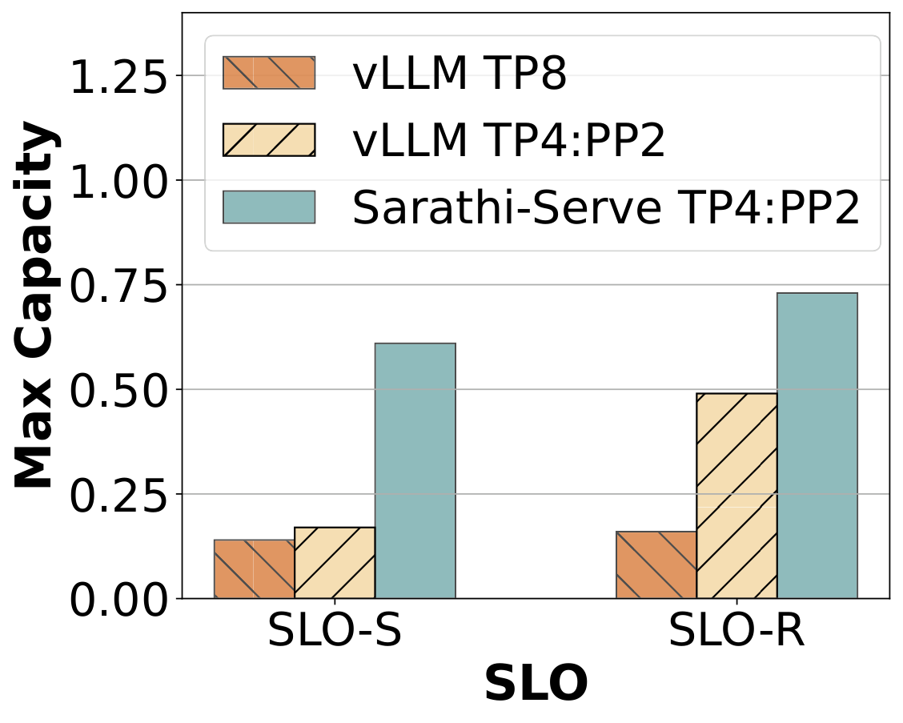
5.4 消融研究
在本小节中，我们将对Sarathi-Serve的不同方面进行消融研究。特别地，我们关注回答以下两个问题：1）分块对prefill吞吐量的影响，2）分析混合batch和分块对延迟的影响。虽然本节仅提供少数实验结果，但以下讨论的所有趋势在不同型号-硬件组合中均一致。
5.4.1 分 块prefill的 开销
25 展示了 Yi-34B 在整体prefill运行时间上对开销分块的增加。正如预期的那样，较小的块会带来更高的开销，正如25中条线高度逐渐降低所示。然而，即使是最小的512块，我们也观察到最多25% \(\sim\)适度的开销。而在2048年更大的token预算中，分块prefill的开销几乎可以忽略不计。
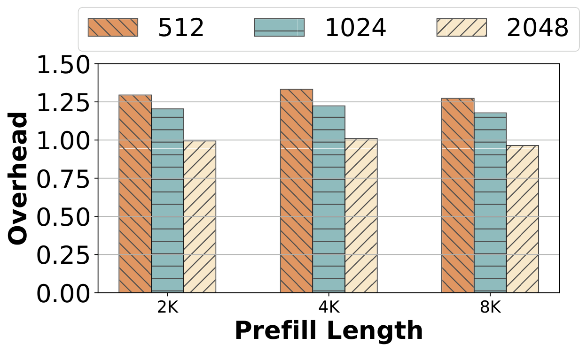
5.4.2 单个技术的影响
最后， [表：评估：归因] 显示了在单独评估Sarathi-Serve各组件时的TTFT和TBT延迟，即仅分 块prefill、混合 batch（混合batch兼有prefill和解码请求）以及两者协同使用时的情况。这些结果表明，这两种技术协同工作效果最佳：仅用 分块prefill时增加TTFT，因为prefill块效率略低;而仅混合 batch则提高TBT，因为长时间的prefill仍可能造成代际停滞。结合使用时，Sarathi-Serve在两个维度上都能提升性能。
6 相关工作
Clipper、TensorFlow-Serving、Clockwork和BatchMaker等系统研究了模型服务的各种布局、缓存和batch策略。然而，这些系统未能解决自回归Transformer推断的挑战。近年来，Orca、vLLM、FlexGen、FasterTransformers、LightSeq 和 TurboTransformers 等系统提出了针对Transformer推断的领域特定优化方案。FlexGen 优化了 LLM 推断，以适应资源受限的离线场景中的吞吐量，即不适合在线服务。FastServe提出了一种抢占式调度框架用于LLM推断，以最小化作业完成时间。我们对Orca和vLLM进行了详细比较，因为它们代表了LLM推断领域的最前沿。
最近出现的另一种方法是将不同副本的prefill和decode 阶段拆分，如SplitWise、DistServe和TetriInfer所提出。这些解决方案可以完全消除prefill和解码之间的干扰。然而，拆分需要在 每个请求完成 prefill阶段后迁移其KV cache，这在不同副本之间缺乏高带宽互连的情况下可能具有挑战性。此外，这种方法还低估了prefill副本的GPU内存容量，即只有解码副本负责存储KV cache。积极方面，拆分方法可以以最高效率执行prefill（因此获得更好的TTFT），这与分块prefill相比，后者速度略慢于完整prefill。我们将Sarathi-Serve与基于细分的解决方案之间的定量比较留给后续研究。
最近，Sheng 等人。 提议修改迭代级batch算法，以确保多租户环境中客户端之间的公平性。FastServe采用基于抢占的调度机制来缓解头线阻塞。此类算法优化与我们的方法相辅相成，且可受益于Sarathi-Serve实现的较低prefill-解码干扰。另一个近期系统APIServe采用了Sarathi的分块prefill，利用解码batch中的计算浪费，提前重新填充prefill，实现多回合API服务。
近期工作提出了多种优化方案，以提升Transformer的硬件利用率。FasterTransformer 使用模型特定的 GPU 内核实现。CocoNet 并旨在将计算与通信结合以提升 GPU 利用率：这些技术在使用高度张量并行的分布式模型中尤为有用，尤其是当通信时间可能主导计算的模型中。此外，计算自注意的成本与序列长度成平方增长，因此在长时间上下文中可能变得显著。 提出了多种技术，通过精心铺砌和工作分区来最小化自我注意力的内存瓶颈。此外，还探索了多种并行化策略以优化模型的布局。这些技巧与Sarathi-Serve正交。
大量关于模型创新的研究试图解决基于Transformer的语言模型的不足，或推动模型架构的下一阶段，超越Transformer。例如，多查询注意力在所有注意力集中共享相同的键和值，以减少KV cache的大小，从而允许GPU上容纳更大的batch。多项近期研究还表明，模型尺寸可以通过量化显著压缩。专家混合模型的主要目的是减少在迭代中激活的模型参数数量。近年来，保留型网络被提出作为Transformer的继任者。相比之下，我们重点从GPU的角度解决流行Transformer型号的性能问题。
7 结论
优化LLM推理以实现高吞吐量和低延迟固然理想，但也具有挑战性。我们通过将现有LLM推理调度器分为两类—— prefill 优先级和 解码优先级，对现有LLM推理调度器进行了广泛的描述。总体来说，我们认为前者在优化吞吐量方面更好，而后者在优化TBT延迟方面更为出色。然而，当吞吐量和延迟都很重要时，这些方法都不是理想的。
为了解决这一权衡，我们引入了Sarathi-Serve——一种由 分块prefill 和 无停顿batch组成的新方法的系统。Sarathi-Serve将输入prompt分块导入较小的工作单元，创建无停滞的进度。这样，Sarathi-Serve可以在不暂停正在进行的解码的情况下添加新请求。我们的评估显示，Sarathi-Serve在单块A100 GPU上提升Mistral-7B最多2.6\(\times\) ，在8块A100 GPU上提升Falcon-180B最高5.6\(\times\) 。
致谢
我们感谢OSDI审核员和我们的牧师给予的宝贵反馈。该研究部分由GT云中心支持，该中心隶属于数据工程与科学研究所（IDEaS），并获得Microsoft的资助，同时也得到了佐治亚理工学院新型计算层级研究中心（CRNCH）的支持。
文物附录
7.1 摘要
我们的开源成果可在 GitHub上获取。本仓库包含我们对Sarathi-Serve的实现，以及用于运行和绘制本文中实验的工具和脚本。
该仓库最初是vLLM项目的一个分支。Sarathi-Serve是一款轻量级高性能研究原型，功能上与开源vLLM完全一致。我们只保留了最关键的功能，并采用了代码库以加快研究迭代。
7.2 范围
这一伪造物使读者能够验证Sarathi-Serve论文中的主张（图示），并为复制所述实验提供了手段。该工件可用于搭建必要环境、执行主要结果并进行微基准测试，从而全面理解Sarathi-Serve中的关键主张。
7.3 目录
仓库结构如下，系统的主要源代码包含在 目录 /sarathi 中。自定义 CUDA 内核的实现位于 /csrc 目录中。所有用于重现实验的脚本都在 /osdi-experiments 中，最后，用于实验的痕迹文件存储在 /data 中。
7.4 主持
你可以从 GitHub 获取我们的文件： GitHub。Github仓库的主分支正在积极更新，但我们会在一个易于识别的README文件中，保持关于工件的清晰且可访问的说明。所有详细的操作说明和 README 文件均可在 osdi-sarathi-serve 分支中获取。
7.5 要求
Sarathi-Serve已在A100和A40 GPU上与CUDA 12.1进行测试。实验所用的具体GPU SKU及所采用的并行策略在对应工件图的README中有清晰说明，便于重复。
完整图表补充
以下图表在原 LaTeX 中由自定义宏或多子图环境生成，正文转换时未能自动嵌入，现按源文件顺序补全。
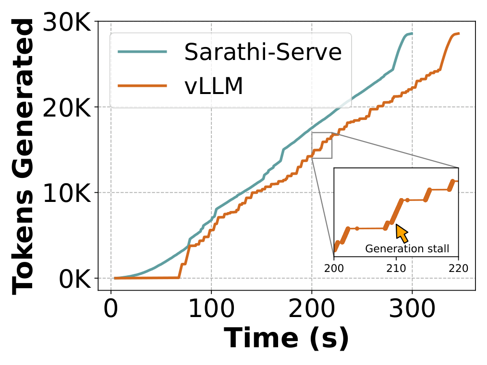

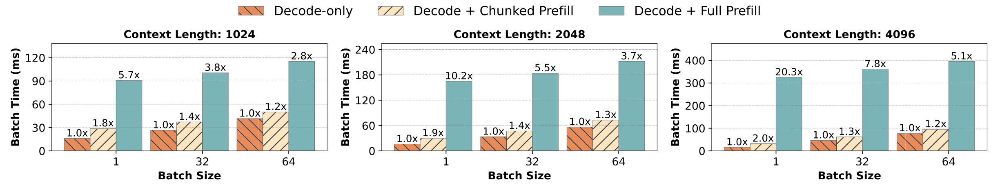
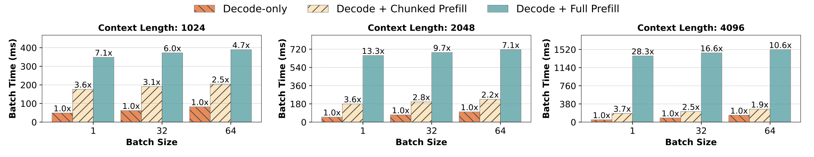
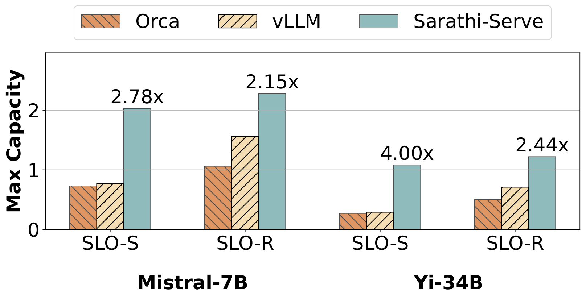
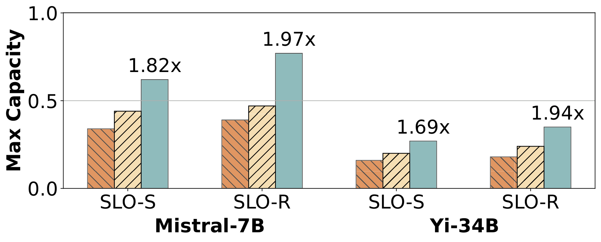
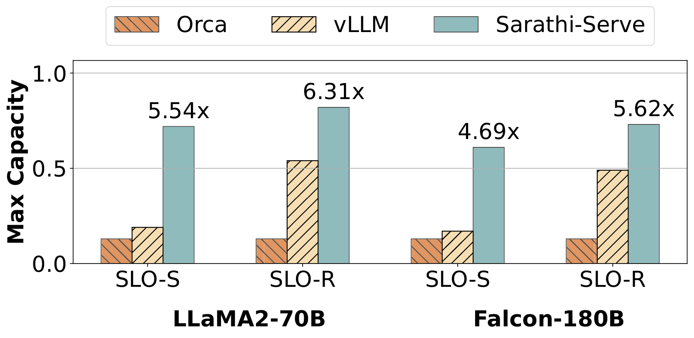

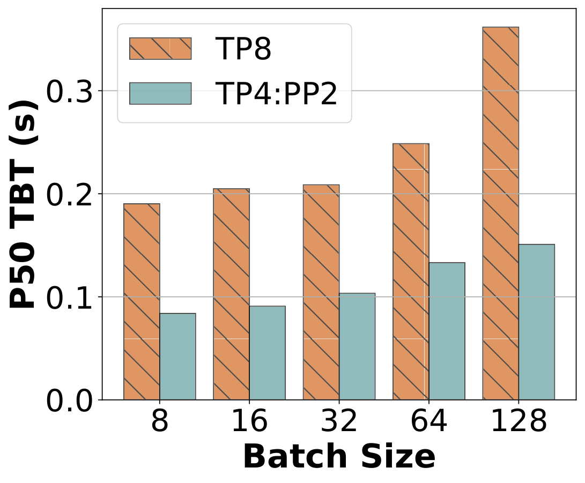

参考文献
Amazon codewhisperer. https://aws.amazon.com/codewhisperer/.
Anthropic claude. https://claude.ai.
arxiv.org e-print archive. https://arxiv.org/.
Bing ai. https://www.bing.com/chat.
Character ai. https://character.ai.
Chatgpt. .
Faster Transformer. https://github.com/NVIDIA/FasterTransformer.
Github copilot. https://github.com/features/copilot.
Google bard. https://bard.google.com.
Google duet ai. https://workspace.google.com/solutions/ai/.
Komo. https://komo.ai/.
Lightllm: A light and fast inference service for llm. https://github.com/ModelTC/lightllm.
Matrix multiplication background user’s guide. https://docs.nvidia.com/deeplearning/performance/dl-performance-matrix-multiplication/index.html.
Microsoft copilot. https://www.microsoft.com/en-us/microsoft-copilot.
Nvidia collective communications library (nccl). https://developer.nvidia.com/nccl.
Nvidia dgx platform. https://www.nvidia.com/en-us/data-center/dgx-platform/.
NVIDIA Triton Dynamic Batching. https://docs.nvidia.com/deeplearning/triton-inference-server/user-guide/docs/user_guide/model_configuration.html#dynamic-batcher.
Openai gpt-3: Understanding the architecture. https://www.theaidream.com/post/openai-gpt-3-understanding-the-architecture.
Perplexity ai. https://www.perplexity.ai/.
Replit ghostwriter. https://replit.com/site/ghostwriter.
Tensorrt-llm: A tensorrt toolbox for optimized large language model inference. https://github.com/NVIDIA/TensorRT-LLM.
Using NVIDIA’s AI/ML Frameworks for Generative AI on VMware vSphere. https://core.vmware.com/blog/using-nvidias-aiml-frameworks-generative-ai-vmware-vsphere.
vllm: Easy, fast, and cheap llm serving for everyone. https://github.com/vllm-project/vllm.
Yi series of large language models trained from scratch by developers at 01.AI. https://huggingface.co/01-ai/Yi-34B-200K.
You.com. https://you.com/.
Reyna Abhyankar, Zijian He, Vikranth Srivatsa, Hao Zhang, and Yiying Zhang. Apiserve: Efficient api support for large-language model inferencing. , 2024.
Abien Fred Agarap. Deep learning using rectified linear units (relu), 2019.
Amey Agrawal, Nitin Kedia, Jayashree Mohan, Ashish Panwar, Nipun Kwatra, Bhargav S Gulavani, Ramachandran Ramjee, and Alexey Tumanov. Vidur: A large-scale simulation framework for llm inference. , 2024.
Amey Agrawal, Ashish Panwar, Jayashree Mohan, Nipun Kwatra, Bhargav S. Gulavani, and Ramachandran Ramjee. Sarathi: Efficient llm inference by piggybacking decodes with chunked prefills, 2023.
Joshua Ainslie, James Lee-Thorp, Michiel de Jong, Yury Zemlyanskiy, Federico Lebrón, and Sumit Sanghai. Gqa: Training generalized multi-query transformer models from multi-head checkpoints, 2023.
Ebtesam Almazrouei, Hamza Alobeidli, Abdulaziz Alshamsi, Alessandro Cappelli, Ruxandra Cojocaru, Mérouane Debbah, Étienne Goffinet, Daniel Hesslow, Julien Launay, Quentin Malartic, Daniele Mazzotta, Badreddine Noune, Baptiste Pannier, and Guilherme Penedo. The falcon series of open language models, 2023.
Mikel Artetxe, Shruti Bhosale, Naman Goyal, Todor Mihaylov, Myle Ott, Sam Shleifer, Xi Victoria Lin, Jingfei Du, Srinivasan Iyer, Ramakanth Pasunuru, Giri Anantharaman, Xian Li, Shuohui Chen, Halil Akin, Mandeep Baines, Louis Martin, Xing Zhou, Punit Singh Koura, Brian O’Horo, Jeff Wang, Luke Zettlemoyer, Mona Diab, Zornitsa Kozareva, and Ves Stoyanov. Efficient large scale language modeling with mixtures of experts, 2022.
Sanjith Athlur, Nitika Saran, Muthian Sivathanu, Ramachandran Ramjee, and Nipun Kwatra. Varuna: scalable, low-cost training of massive deep learning models. In Proceedings of the Seventeenth European Conference on Computer Systems, pages 472–487, 2022.
Tom Brown, Benjamin Mann, Nick Ryder, Melanie Subbiah, Jared D Kaplan, Prafulla Dhariwal, Arvind Neelakantan, Pranav Shyam, Girish Sastry, Amanda Askell, et al. Language models are few-shot learners. , 33:1877–1901, 2020.
Aakanksha Chowdhery, Sharan Narang, Jacob Devlin, Maarten Bosma, Gaurav Mishra, Adam Roberts, Paul Barham, Hyung Won Chung, Charles Sutton, Sebastian Gehrmann, Parker Schuh, Kensen Shi, Sasha Tsvyashchenko, Joshua Maynez, Abhishek Rao, Parker Barnes, Yi Tay, Noam Shazeer, Vinodkumar Prabhakaran, Emily Reif, Nan Du, Ben Hutchinson, Reiner Pope, James Bradbury, Jacob Austin, Michael Isard, Guy Gur-Ari, Pengcheng Yin, Toju Duke, Anselm Levskaya, Sanjay Ghemawat, Sunipa Dev, Henryk Michalewski, Xavier Garcia, Vedant Misra, Kevin Robinson, Liam Fedus, Denny Zhou, Daphne Ippolito, David Luan, Hyeontaek Lim, Barret Zoph, Alexander Spiridonov, Ryan Sepassi, David Dohan, Shivani Agrawal, Mark Omernick, Andrew M. Dai, Thanumalayan Sankaranarayana Pillai, Marie Pellat, Aitor Lewkowycz, Erica Moreira, Rewon Child, Oleksandr Polozov, Katherine Lee, Zongwei Zhou, Xuezhi Wang, Brennan Saeta, Mark Diaz, Orhan Firat, Michele Catasta, Jason Wei, Kathy Meier-Hellstern, Douglas Eck, Jeff Dean, Slav Petrov, and Noah Fiedel. Palm: Scaling language modeling with pathways. , abs/2204.02311, 2022.
Arman Cohan, Franck Dernoncourt, Doo Soon Kim, Trung Bui, Seokhwan Kim, Walter Chang, and Nazli Goharian. A discourse-aware attention model for abstractive summarization of long documents. In Proceedings of the 2018 Conference of the North American Chapter of the Association for Computational Linguistics: Human Language Technologies, Volume 2 (Short Papers), pages 615–621, New Orleans, Louisiana, June 2018. Association for Computational Linguistics.
Daniel Crankshaw, Xin Wang, Guilio Zhou, Michael J Franklin, Joseph E Gonzalez, and Ion Stoica. Clipper: A \(\{\)Low-Latency\(\}\) online prediction serving system. In 14th USENIX Symposium on Networked Systems Design and Implementation (NSDI 17), pages 613–627, 2017.
Tri Dao. Flashattention-2: Faster attention with better parallelism and work partitioning, 2023.
Tri Dao, Daniel Y. Fu, Stefano Ermon, Atri Rudra, and Christopher Ré. Flashattention: Fast and memory-efficient exact attention with io-awareness, 2022.
Tim Dettmers, Mike Lewis, Younes Belkada, and Luke Zettlemoyer. Llm.int8(): 8-bit matrix multiplication for transformers at scale, 2022.
Tim Dettmers, Artidoro Pagnoni, Ari Holtzman, and Luke Zettlemoyer. Qlora: Efficient finetuning of quantized llms, 2023.
Jiarui Fang, Yang Yu, Chengduo Zhao, and Jie Zhou. Turbotransformers: an efficient GPU serving system for transformer models. In PPoPP ’21: 26th ACM SIGPLAN Symposium on Principles and Practice of Parallel Programming, Virtual Event, Republic of Korea, February 27- March 3, 2021, pages 389–402. ACM, 2021.
Elias Frantar, Saleh Ashkboos, Torsten Hoefler, and Dan Alistarh. Gptq: Accurate post-training quantization for generative pre-trained transformers, 2023.
Pin Gao, Lingfan Yu, Yongwei Wu, and Jinyang Li. Low latency rnn inference with cellular batching. In Proceedings of the Thirteenth EuroSys Conference, EuroSys ’18, New York, NY, USA, 2018. Association for Computing Machinery.
Arpan Gujarati, Reza Karimi, Safya Alzayat, Wei Hao, Antoine Kaufmann, Ymir Vigfusson, and Jonathan Mace. Serving \(\{\)DNNs\(\}\) like clockwork: Performance predictability from the bottom up. In 14th USENIX Symposium on Operating Systems Design and Implementation (OSDI 20), pages 443–462, 2020.
Dan Hendrycks and Kevin Gimpel. Gaussian error linear units (gelus), 2023.
Cunchen Hu, Heyang Huang, Liangliang Xu, Xusheng Chen, Jiang Xu, Shuang Chen, Hao Feng, Chenxi Wang, Sa Wang, Yungang Bao, et al. Inference without interference: Disaggregate llm inference for mixed downstream workloads. , 2024.
Haiyang Huang, Newsha Ardalani, Anna Sun, Liu Ke, Hsien-Hsin S. Lee, Anjali Sridhar, Shruti Bhosale, Carole-Jean Wu, and Benjamin Lee. Towards moe deployment: Mitigating inefficiencies in mixture-of-expert (moe) inference, 2023.
Yanping Huang, Youlong Cheng, Ankur Bapna, Orhan Firat, Dehao Chen, Mia Chen, HyoukJoong Lee, Jiquan Ngiam, Quoc V Le, Yonghui Wu, et al. Gpipe: Efficient training of giant neural networks using pipeline parallelism. , 32, 2019.
Abhinav Jangda, Jun Huang, Guodong Liu, Amir Hossein Nodehi Sabet, Saeed Maleki, Youshan Miao, Madanlal Musuvathi, Todd Mytkowicz, and Olli Saarikivi. Breaking the computation and communication abstraction barrier in distributed machine learning workloads. In Proceedings of the 27th ACM International Conference on Architectural Support for Programming Languages and Operating Systems, ASPLOS ’22, page 402–416, New York, NY, USA, 2022. Association for Computing Machinery.
Albert Q Jiang, Alexandre Sablayrolles, Arthur Mensch, Chris Bamford, Devendra Singh Chaplot, Diego de las Casas, Florian Bressand, Gianna Lengyel, Guillaume Lample, Lucile Saulnier, et al. Mistral 7b. , 2023.
Jared Kaplan, Sam McCandlish, Tom Henighan, Tom B. Brown, Benjamin Chess, Rewon Child, Scott Gray, Alec Radford, Jeffrey Wu, and Dario Amodei. Scaling laws for neural language models. , abs/2001.08361, 2020.
Woosuk Kwon, Zhuohan Li, Siyuan Zhuang, Ying Sheng, Lianmin Zheng, Cody Hao Yu, Joseph Gonzalez, Hao Zhang, and Ion Stoica. Efficient memory management for large language model serving with pagedattention. SOSP ’23, page 611–626, New York, NY, USA, 2023. Association for Computing Machinery.
Jiamin Li, Yimin Jiang, Yibo Zhu, Cong Wang, and Hong Xu. Accelerating distributed MoE training and inference with lina. In 2023 USENIX Annual Technical Conference (USENIX ATC 23), pages 945–959, Boston, MA, July 2023. USENIX Association.
Deepak Narayanan, Aaron Harlap, Amar Phanishayee, Vivek Seshadri, Nikhil R Devanur, Gregory R Ganger, Phillip B Gibbons, and Matei Zaharia. Pipedream: generalized pipeline parallelism for dnn training. In Proceedings of the 27th ACM Symposium on Operating Systems Principles, pages 1–15, 2019.
Christopher Olston, Noah Fiedel, Kiril Gorovoy, Jeremiah Harmsen, Li Lao, Fangwei Li, Vinu Rajashekhar, Sukriti Ramesh, and Jordan Soyke. Tensorflow-serving: Flexible, high-performance ml serving, 2017.
OpenAI. technical report. , abs/2303.08774, 2023.
Pratyush Patel, Esha Choukse, Chaojie Zhang, Íñigo Goiri, Aashaka Shah, Saeed Maleki, and Ricardo Bianchini. Splitwise: Efficient generative llm inference using phase splitting, 2023.
Reiner Pope, Sholto Douglas, Aakanksha Chowdhery, Jacob Devlin, James Bradbury, Anselm Levskaya, Jonathan Heek, Kefan Xiao, Shivani Agrawal, and Jeff Dean. Efficiently scaling transformer inference, 2022.
Markus N. Rabe and Charles Staats. Self-attention does not need \(o(n^2)\) memory, 2022.
Noam Shazeer. Fast transformer decoding: One write-head is all you need, 2019.
Ying Sheng, Shiyi Cao, Dacheng Li, Banghua Zhu, Zhuohan Li, Danyang Zhuo, Joseph E Gonzalez, and Ion Stoica. Fairness in serving large language models. , 2023.
Ying Sheng, Lianmin Zheng, Binhang Yuan, Zhuohan Li, Max Ryabinin, Daniel Y. Fu, Zhiqiang Xie, Beidi Chen, Clark Barrett, Joseph E. Gonzalez, Percy Liang, Christopher Ré, Ion Stoica, and Ce Zhang. Flexgen: High-throughput generative inference of large language models with a single gpu, 2023.
Mohammad Shoeybi, Mostofa Patwary, Raul Puri, Patrick LeGresley, Jared Casper, and Bryan Catanzaro. Megatron-lm: Training multi-billion parameter language models using gpu model parallelism. , 2019.
Yutao Sun, Li Dong, Shaohan Huang, Shuming Ma, Yuqing Xia, Jilong Xue, Jianyong Wang, and Furu Wei. Retentive network: A successor to transformer for large language models, 2023.
Hugo Touvron, Louis Martin, Kevin Stone, Peter Albert, Amjad Almahairi, Yasmine Babaei, Nikolay Bashlykov, Soumya Batra, Prajjwal Bhargava, Shruti Bhosale, Dan Bikel, Lukas Blecher, Cristian Canton Ferrer, Moya Chen, Guillem Cucurull, David Esiobu, Jude Fernandes, Jeremy Fu, Wenyin Fu, Brian Fuller, Cynthia Gao, Vedanuj Goswami, Naman Goyal, Anthony Hartshorn, Saghar Hosseini, Rui Hou, Hakan Inan, Marcin Kardas, Viktor Kerkez, Madian Khabsa, Isabel Kloumann, Artem Korenev, Punit Singh Koura, Marie-Anne Lachaux, Thibaut Lavril, Jenya Lee, Diana Liskovich, Yinghai Lu, Yuning Mao, Xavier Martinet, Todor Mihaylov, Pushkar Mishra, Igor Molybog, Yixin Nie, Andrew Poulton, Jeremy Reizenstein, Rashi Rungta, Kalyan Saladi, Alan Schelten, Ruan Silva, Eric Michael Smith, Ranjan Subramanian, Xiaoqing Ellen Tan, Binh Tang, Ross Taylor, Adina Williams, Jian Xiang Kuan, Puxin Xu, Zheng Yan, Iliyan Zarov, Yuchen Zhang, Angela Fan, Melanie Kambadur, Sharan Narang, Aurelien Rodriguez, Robert Stojnic, Sergey Edunov, and Thomas Scialom. Llama 2: Open foundation and fine-tuned chat models, 2023.
Ashish Vaswani, Noam Shazeer, Niki Parmar, Jakob Uszkoreit, Llion Jones, Aidan N Gomez, Ł ukasz Kaiser, and Illia Polosukhin. Attention is all you need. In I. Guyon, U. Von Luxburg, S. Bengio, H. Wallach, R. Fergus, S. Vishwanathan, and R. Garnett, editors, Advances in Neural Information Processing Systems, volume 30. Curran Associates, Inc., 2017.
Guan Wang, Sijie Cheng, Xianyuan Zhan, Xiangang Li, Sen Song, and Yang Liu. Openchat: Advancing open-source language models with mixed-quality data, 2023.
Shibo Wang, Jinliang Wei, Amit Sabne, Andy Davis, Berkin Ilbeyi, Blake Hechtman, Dehao Chen, Karthik Srinivasa Murthy, Marcello Maggioni, Qiao Zhang, Sameer Kumar, Tongfei Guo, Yuanzhong Xu, and Zongwei Zhou. Overlap communication with dependent computation via decomposition in large deep learning models. In Proceedings of the 28th ACM International Conference on Architectural Support for Programming Languages and Operating Systems, Volume 1, ASPLOS 2023, page 93–106, New York, NY, USA, 2022. Association for Computing Machinery.
Xiaohui Wang, Ying Xiong, Yang Wei, Mingxuan Wang, and Lei Li. ightSeq: A high performance inference library for transformers. In Proceedings of the 2021 Conference of the North American Chapter of the Association for Computational Linguistics: Human Language Technologies: Industry Papers (NAACL-HLT), pages 113–120. Association for Computational Linguistics, June 2021.
Jason Wei, Yi Tay, Rishi Bommasani, Colin Raffel, Barret Zoph, Sebastian Borgeaud, Dani Yogatama, Maarten Bosma, Denny Zhou, Donald Metzler, Ed H. Chi, Tatsunori Hashimoto, Oriol Vinyals, Percy Liang, Jeff Dean, and William Fedus. Emergent abilities of large language models. , 2022, 2022.
Bingyang Wu, Yinmin Zhong, Zili Zhang, Gang Huang, Xuanzhe Liu, and Xin Jin. Fast distributed inference serving for large language models, 2023.
Guangxuan Xiao, Ji Lin, Mickael Seznec, Hao Wu, Julien Demouth, and Song Han. Smoothquant: Accurate and efficient post-training quantization for large language models, 2023.
Zihao Ye, Lequn Chen, Ruihang Lai, Yilong Zhao, Size Zheng, Junru Shao, Bohan Hou, Hongyi Jin, Yifei Zuo, Liangsheng Yin, Tianqi Chen, and Luis Ceze. Accelerating self-attentions for llm serving with flashinfer, February 2024.
Gyeong-In Yu, Joo Seong Jeong, Geon-Woo Kim, Soojeong Kim, and Byung-Gon Chun. Orca: A distributed serving system for Transformer-Based generative models. In 16th USENIX Symposium on Operating Systems Design and Implementation (OSDI 22), pages 521–538, Carlsbad, CA, July 2022. USENIX Association.
Lianmin Zheng, Wei-Lin Chiang, Ying Sheng, Tianle Li, Siyuan Zhuang, Zhanghao Wu, Yonghao Zhuang, Zhuohan Li, Zi Lin, Eric. P Xing, Joseph E. Gonzalez, Ion Stoica, and Hao Zhang. Lmsys-chat-1m: A large-scale real-world llm conversation dataset, 2023.
Yinmin Zhong, Shengyu Liu, Junda Chen, Jianbo Hu, Yibo Zhu, Xuanzhe Liu, Xin Jin, and Hao Zhang. Distserve: Disaggregating prefill and decoding for goodput-optimized large language model serving, 2024.